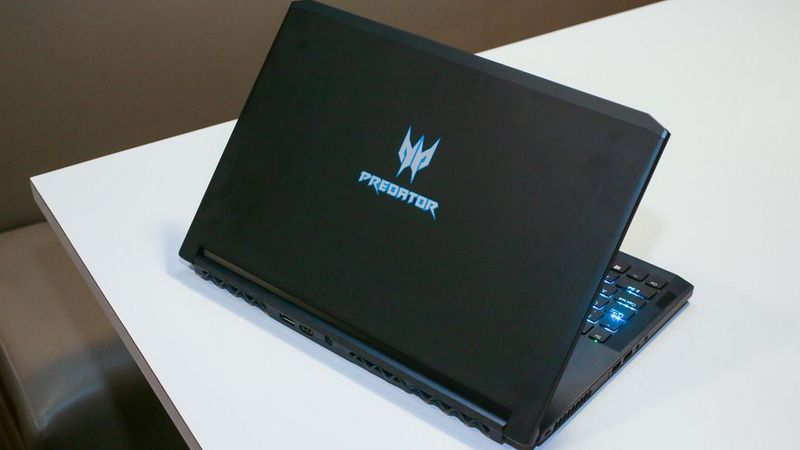
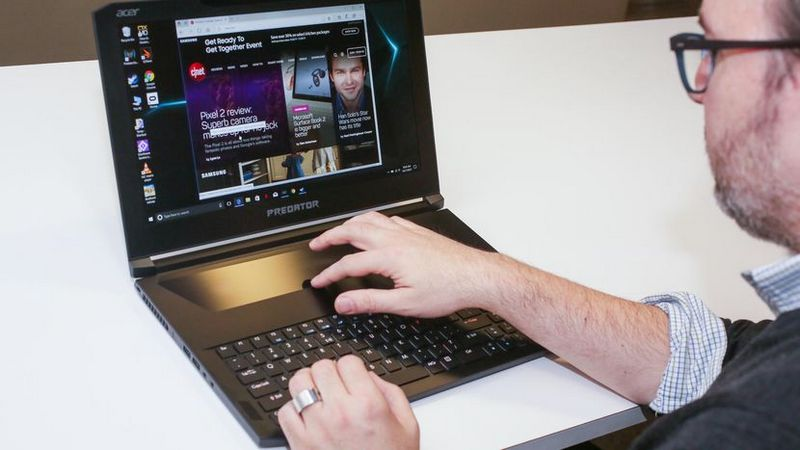

Acer Predator Triton 700
Posted By: FeryJuliyanto On Januari 19th, 2022 . Social media | Instagram.

Acer adalah salah satu vendor yang meramaikan pasar laptop gaming dunia. Terdapat 5 kelebihan laptop gaming Acer yang diluncurkan tahun 2017 ini, yakni Predator Triton 700, yang dijamin akan membuatmu berkeringat dingin. Predator Triton 700 merupakan produk yang paling ditonjolkan oleh Acer di tahun 2017 ini. Perangkat tersebut merupakan peningkatan yang lebih jauh dari seri laptop gaming yang diluncurkan Acer pada tahun lalu. Dengan demikian, tidak heran jika Acer menyematkan beragam teknologi terbaru di dalamnya, yang mampu menyaingi beragam laptop gaming sekelasnya. Tidak heran jika banyak orang yang memimpikan Triton 700 untuk segera hadir di atas meja kerja atau meja bermain mereka. Daya tarik Predator Triton 700 pun semakin meningkat saat kita menyadari kelebihan laptop gaming besutan Acer di tahun 2017 tersebut. Dan, inilah 2 kelebihan Acer Predator Triton 700!
Predator Triton 700 merupakan salah satu dari segilintir laptop yang dibekali dengan Intel Core i7-7700HQ. Prosesor tersebut dilengkapi dengan 4 core, dan mampu mencapai kecepatan 2,80 GHz. Dengan adanya prosesor tersebut, beragam aktifitas yang membutuhkan kinerja prosesor yang sedikit intensif, seperti menjalankan game PlayerUnknown Battleground atau yang akrab dikenal PUBG
Memang kehadiran Intel Core i7-7700HQ sendiri telah menyuguhkan komputasi yang menggila. Namun, prosesor saja nampaknya kurang sempurna ketika berbicara soal laptop gaming, yang sudah pasti membutuhkan kehadiran kartu grafis yang kuat. Menyadari hal tersebut, Acer menyematkan kartu grafis terbaik dari NVIDIA, yakni GTX 1080 Max-Q design. Kehadiran GPU tersebut membuat Predator Triton 700 semakin menjanjikan untuk menjalankan game dengan detail grafis yang tinggi. Game seperti The Witcher 3 dan Deus Ex yang memiliki syarat spesifikasi yang tinggi sudah dapat dipastikan berjalan dengan baik, walaupun setting grafis berada pada posisi High atau Ultra.
